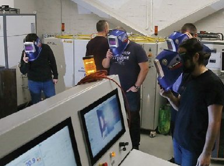

01
Нетконференции
Отраслевые встречи выпускников: инженерный разговор по задаче, без лишнего маркетинга.
ПрисоединитьсяНИОКР, лаборатории, нетконференции, амбассадорская программа и совместные разработки.
Отраслевые встречи выпускников: инженерный разговор по задаче, без лишнего маркетинга.
ПрисоединитьсяВыпускники как проводники ценностей Корабелки во внешней среде и в регионах.
Стать амбассадоромТНПА, лазерные и аддитивные технологии, виртуальные лаборатории и внедрение.
Предложить участие
ИЛИСТ, инженерные классы, аддитивные и сварочные технологии — площадки, где выпускник полезен и как заказчик, и как наставник команды.
Присоединиться